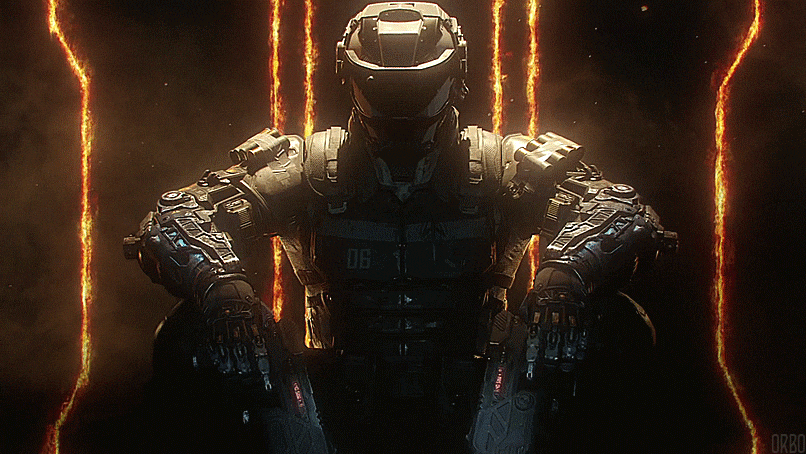
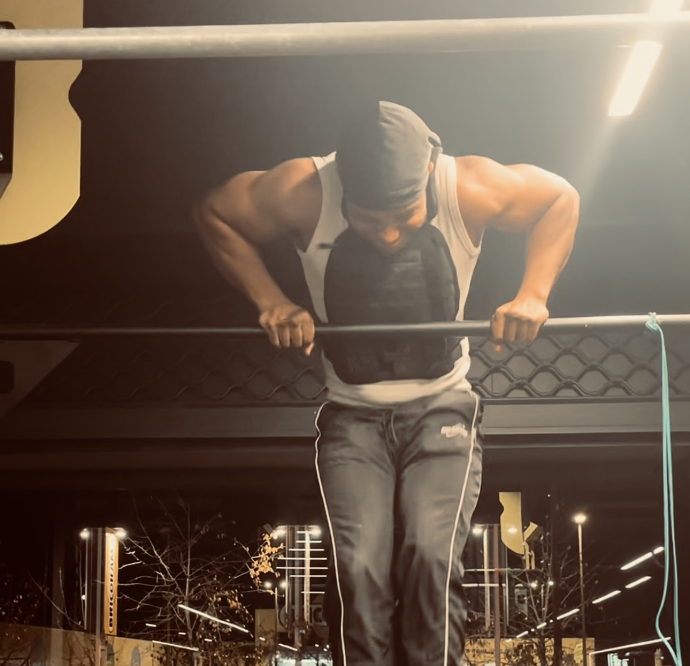
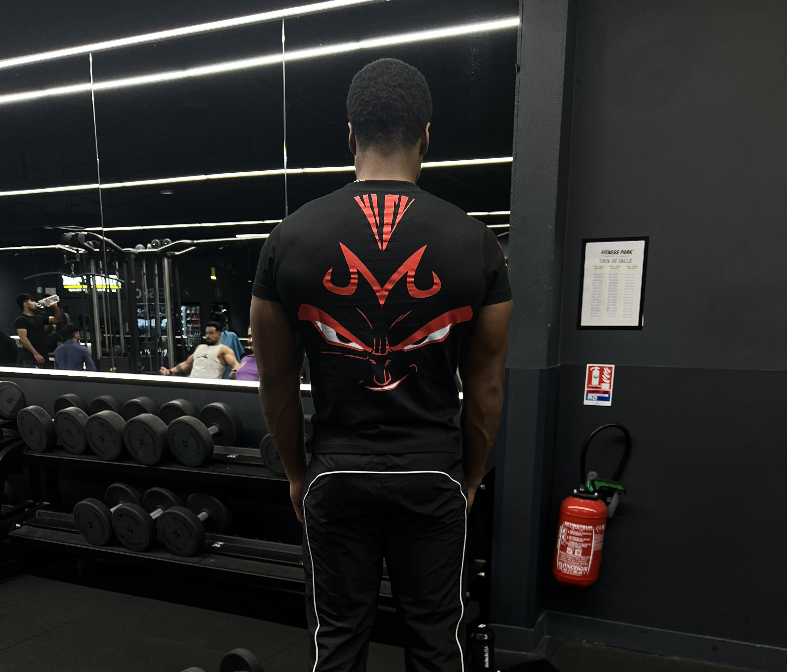
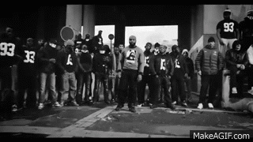

Animé / Série
Passionné par les séries et manga d'action.

Jeux Vidéo
Grand fan de FPS, Battle Royale et jeux d'affrontement.

Sport
Street-Workout · Kickboxing · Boxe Anglaise · Muay Thai.

Photographie
Capturer des moments uniques et développer un œil créatif.

Musique
Rap.

Voyager
Découvrir de nouveaux paysages et horizons.